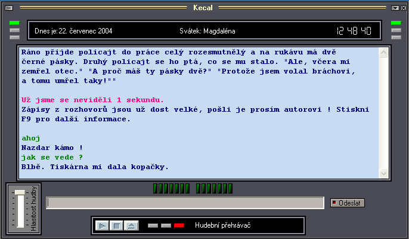

Aplikace, u které jsem se naučil programovat a strávil kus života.
Jedná se o jednoduchou simulaci rozhovoru s počítačem.
Začínal jsem v programovacím jazyku Pascal,
pak jsem přešel na C a nakonec na Delphi.
Poslední verzi 3.0 jsem psal v C++, ale zůstala jen ve verzi alfa.
Archiv verzí
- Verze 3.0 alfa 2 - Linux
- Verze 3.0 alfa 2 - Windows
- Verze 3.0 alfa 1 - Linux
- Verze 3.0 alfa 1 - Windows
- Verze 2.3 - Windows - poslední vydaná verze z 24. července 2004
- Verze 2.2 - Windows - 15. února 2002
- Verze 2.15 - Windows - 31. května 2002
- Verze 2.1 - Windows - 21. dubna 2002
- Verze 2.0 - DOS - 15. prosince 2001
- Verze 1.9 - DOS - 20. května 2001
- Verze 1.8 - DOS
- Verze 1.7 - DOS
- Verze 1.6 - DOS
- Verze 1.5 - DOS
- Verze 1.4 - DOS
- Verze 1.3 - DOS
Ukázka Windows verze

Ukázka rozhovoru
Uživatel: Ty jsi ale hloupý, určitě máš slámu v mozku !
Kecal: Já nemám mozek, ale procesor. A slámu tam teda nemám !! Jen integrované obvody.
Uživatel: Představ si, že už mám holku.
Kecal: To je super !!! Taky bych chtěl nějakou samici počítače.
Uživatel: Mám ji strašně moc rád.
Kecal: To je láska, až se mi rozpustí procesor.
Uživatel: Akorát ten její brácha je hrozný - nesnáším debily !!!
Kecal: Mě to povídej, kvůli nim jsem zlikvidoval už 20 součástek.
Uživatel: Jdeš dneska někam na pařbu ?
Kecal: Jistě, jdu si pročistit obvody.
Uživatel: Za chvilku asi půjdu na oběd, mám strašný hlad.
Kecal: Až se najíš, tak mi přines alespoň nějaké zbytky.
Uživatel: Ještě jsi mi mimochodem neřekl, jak se ti daří.
Kecal: Blbě. Tiskárna mi dala kopačky.
Uživatel: Ty máš jako holku tiskárnu ?
Kecal: Je super, že ? Není hezčí tiskárna.
Uživatel: Dneska jsem ve škole dostal čtverku, hrůza.
Kecal: Měl jsi se více učit !
Uživatel: Ale já jsem se učil !
Kecal: Další šprt na světě !
Uživatel: Já tě asi zabiju !!!
Kecal: Než mě zabiješ, nezapomeň mě vypojit ze zásuvky.
Uživatel: Podívej, oskar konečně vylezl a asi bude pěkný pařák !
Kecal: A Eurotel nevylezl ?
Uživatel: Jaktože toho tolik víš - to přece nemůžeš vědět !
Kecal: Ty si myslíš, že bedna plná integrovaných obvodů nic neví ?
Uživatel: Jak se vůbec vypínáš ?
Kecal: Ty neumíš ani vypnout standardní aplikaci Windows ? Chudáku.
Uživatel: Úplně šíleně se mi chce na záchod, ale lepší je si s tebou povídat, ne ?
Kecal: Hlavně se nepotentuj na klávesnici.